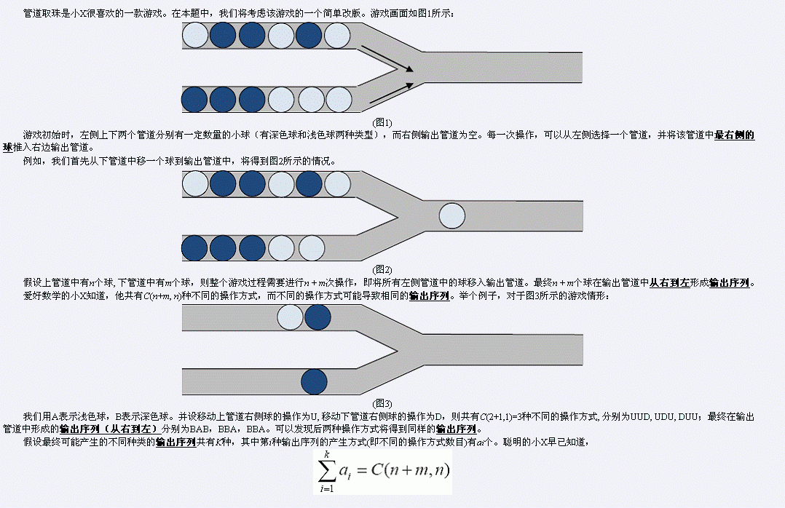
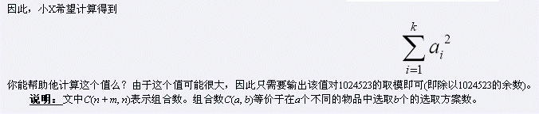
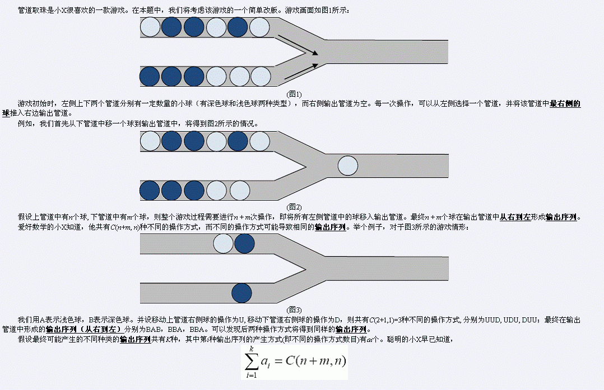
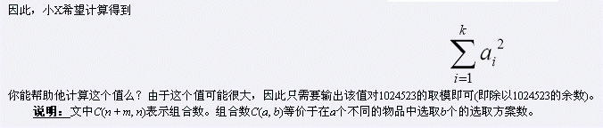

 
| F.A.Qs | Home | Discuss | ProblemSet | Status | Ranklist | Contest | 入门OJ | ModifyUser Xeonacid | Logout | 捐赠本站 |
|---|
| F.A.Qs | Home | Discuss | ProblemSet | Status | Ranklist | Contest | 入门OJ | ModifyUser Xeonacid | Logout | 捐赠本站 |
|---|
 
第一行包含两个整数n, m，分别表示上下两个管道中球的数目。 第二行为一个AB字符串，长度为n，表示上管道中从左到右球的类型。其中A表示浅色球，B表示深色球。 第三行为一个AB字符串，长度为m，表示下管道中的情形。
仅包含一行，即为 Sigma(Ai^2) i从1到k 除以1024523的余数。
样例即为文中(图3)。共有两种不同的输出序列形式，序列BAB有1种产生方式，而序列BBA有2种产生方式，因此答案为5。 【大致数据规模】 约30%的数据满足 n, m ≤ 12； 约100%的数据满足n, m ≤ 500。